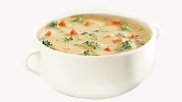

Broccoli & Cheddar Soup

Description
Broccoli Cheddar Soup is a creamy and comforting dish that combines tender broccoli florets with a rich, velvety cheese
base. With its vibrant green color and a delightful balance of cheese and broccoli, it's a hearty choice perfect for
warming up on chilly days.
Ingredients
- 2 tablespoons butter
- 1 onion, chopped
- 2 cloves garlic, minced
- 4 cups broccoli florets (fresh or frozen)
- 4 cups vegetable broth
- 2 cups shredded sharp cheddar cheese
- 1 cup heavy cream (or milk)
- 1/4 cup all-purpose flour
Steps
- Sauté the Aromatics: In a large pot, melt the butter over medium heat. Add the chopped onion and sauté until translucent,
about 5 minutes. Stir in the garlic and cook for another minute.
- Cook the Broccoli: Add the broccoli florets and broth. Bring to a boil, then reduce the heat and let it simmer for about
10-15 minutes until the broccoli is tender.
- Thicken the Soup: In a small bowl, whisk the flour with a bit of the broth from the pot until smooth. Stir this mixture
back into the soup to thicken it. Let it simmer for another 5 minutes.
- Add Cheese and Cream: Stir in the heavy cream and shredded cheddar cheese until melted and smooth.
- Serve: Ladle the soup into bowls and enjoy!